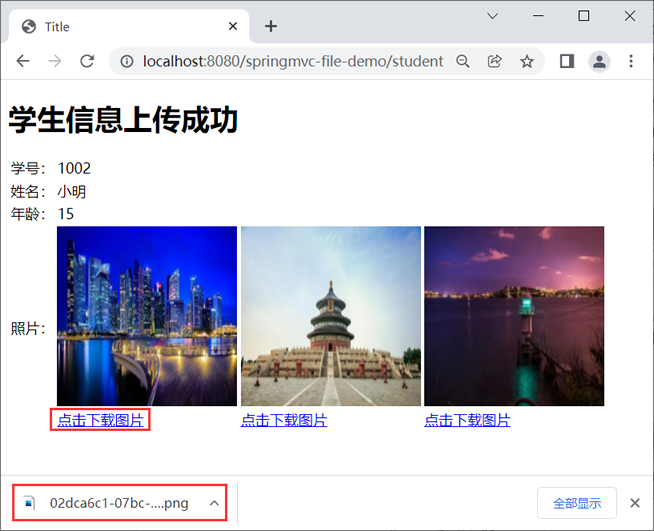

首页 > Spring MVC
Spring MVC文件下载
在实际的项目开发中，文件的上传和下载可以说是最常用的功能之一，例如图片的上传与下载、邮件附件的上传和下载等。在《Spring MVC 文件上传》一节中我们介绍了文件的上传，本节我们将对 Spring MVC 中的文件下载功能进行讲解。
下面我们就结合一个实例，来演示下如何在 Spring MVC 中实现文件的下载功能，可以分为以下步骤。
1. 在《Spring MVC文件上传》一节中创建的 springmvc-file-demo 的工程中，修改 success.html 的代码，在每个图片下面添加一个文件下载的超链接，代码如下。
2. 在net.biancheng.c.controller 包下新建一个名为 DownLoadController 的控制器类，代码如下。
在 DownLoadController 类中共包含以下 2 个方法：

图1：图片上传成功
4. 点击图片下方的“点击下载图片”的超链接，下载对应的图片，结果如下图。
文件下载
文件下载的含义十分简单，它指的就是将服务器中的文件下载到本机上。下面我们就结合一个实例，来演示下如何在 Spring MVC 中实现文件的下载功能，可以分为以下步骤。
1. 在《Spring MVC文件上传》一节中创建的 springmvc-file-demo 的工程中，修改 success.html 的代码，在每个图片下面添加一个文件下载的超链接，代码如下。
<!DOCTYPE html>
<html lang="en" xmlns:th="http://www.thymeleaf.org">
<head>
<meta charset="UTF-8">
<title>Title</title>
</head>
<body>
<h1>学生信息上传成功</h1>
<table>
<tr>
<td>学号：</td>
<td th:text="${student.getStuId()}"></td>
</tr>
<tr>
<td>姓名：</td>
<td th:text="${student.getStuName()}"></td>
</tr>
<tr>
<td>年龄：</td>
<td th:text="${student.getAge()}"></td>
</tr>
<tr>
<td>照片：</td>
<td th:each="p:${student.getPath()}">
<img th:src="${#servletContext.getContextPath()}+'/upload/'+${p}" width='200px' height='200px'/><br>
<!--图片下载的超链接-->
<a th:href="@{/downLoadFile(fileName=${p})}">点击下载图片</a>
</td>
</tr>
</table>
</body>
</html>
2. 在net.biancheng.c.controller 包下新建一个名为 DownLoadController 的控制器类，代码如下。
package net.biancheng.c.controller;
import org.apache.commons.io.FileUtils;
import org.springframework.http.HttpHeaders;
import org.springframework.http.HttpStatus;
import org.springframework.http.MediaType;
import org.springframework.http.ResponseEntity;
import org.springframework.stereotype.Controller;
import org.springframework.web.bind.annotation.RequestMapping;
import javax.servlet.http.HttpServletRequest;
import java.io.File;
import java.io.IOException;
import java.io.UnsupportedEncodingException;
@Controller
public class DownLoadController {
/**
* 文件下载
*
* @param request
* @param fileName
* @return
* @throws IOException
*/
@RequestMapping("/downLoadFile")
public ResponseEntity<byte[]> downLoadFile(HttpServletRequest request, String fileName) throws IOException {
//得到图片的实际路径
String realPath = request.getServletContext().getRealPath("/upload/" + fileName);
//创建该图片的对象
File file = new File(realPath);
//将图片数据读取到字节数组中
byte[] bytes = FileUtils.readFileToByteArray(file);
//创建 HttpHeaders 对象设置响应头信息
HttpHeaders httpHeaders = new HttpHeaders();
//设置图片下载的方式和文件名称
httpHeaders.setContentDispositionFormData("attachment", toUTF8String(fileName));
httpHeaders.setContentType(MediaType.APPLICATION_OCTET_STREAM);
return new ResponseEntity<>(bytes, httpHeaders, HttpStatus.OK);
}
/**
* 下载保存时中文文件名的字符编码转换方法
*/
public String toUTF8String(String str) {
StringBuffer sb = new StringBuffer();
int len = str.length();
for (int i = 0; i < len; i++) {
// 取出字符中的每个字符
char c = str.charAt(i);
// Unicode码值为0~255时，不做处理
if (c >= 0 && c <= 255) {
sb.append(c);
} else { // 转换 UTF-8 编码
byte b[];
try {
b = Character.toString(c).getBytes("UTF-8");
} catch (UnsupportedEncodingException e) {
e.printStackTrace();
b = null;
}
// 转换为%HH的字符串形式
for (int j = 0; j < b.length; j++) {
int k = b[j];
if (k < 0) {
k &= 255;
}
sb.append("%" + Integer.toHexString(k).toUpperCase());
}
}
}
return sb.toString();
}
}
在 DownLoadController 类中共包含以下 2 个方法：
- downLoadFile() 方法：负责文件的下载工作，我们首先根据文件路径和文件名称创建一个 File 对象，然后对响应头中文件的打开方式和下载方式进行了设置，并通过 ResponseEntity 对下载结果对象进行封装。
- toUTF8String() 方法：负责完成中文文件名的字符编码转换。
3. 重启 Tomcat 服务服务器，使用浏览器访问“http://localhost:8080/springmvc-file-demo/”，填写学生信息并上传图片，结果如下。ResponseEntity 对象与前面的章节中介绍的 @ResponseBody 注解相似，它也是用来直接返回结果对象的。
图1：图片上传成功
4. 点击图片下方的“点击下载图片”的超链接，下载对应的图片，结果如下图。

图2：点击链接下载图片
图2：点击链接下载图片
关注公众号「站长严长生」，在手机上阅读所有教程，随时随地都能学习。内含一款搜索神器，免费下载全网书籍和视频。

微信扫码关注公众号